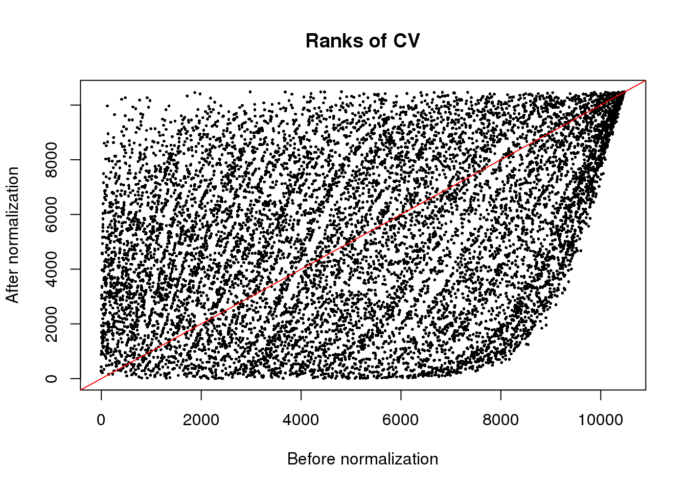
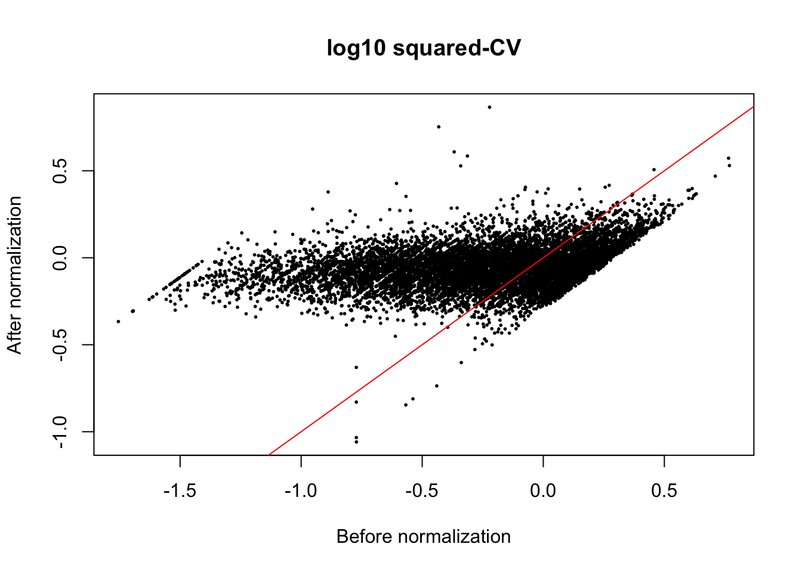
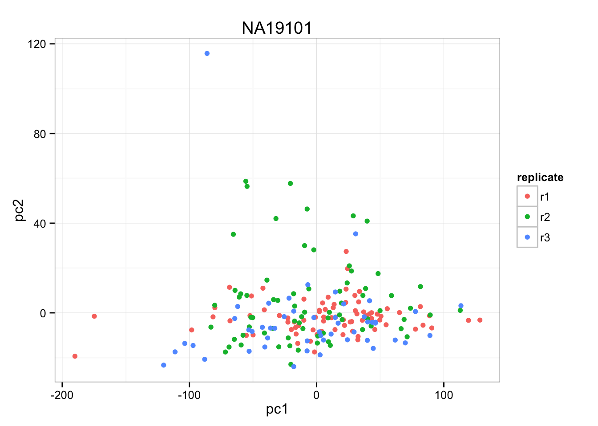
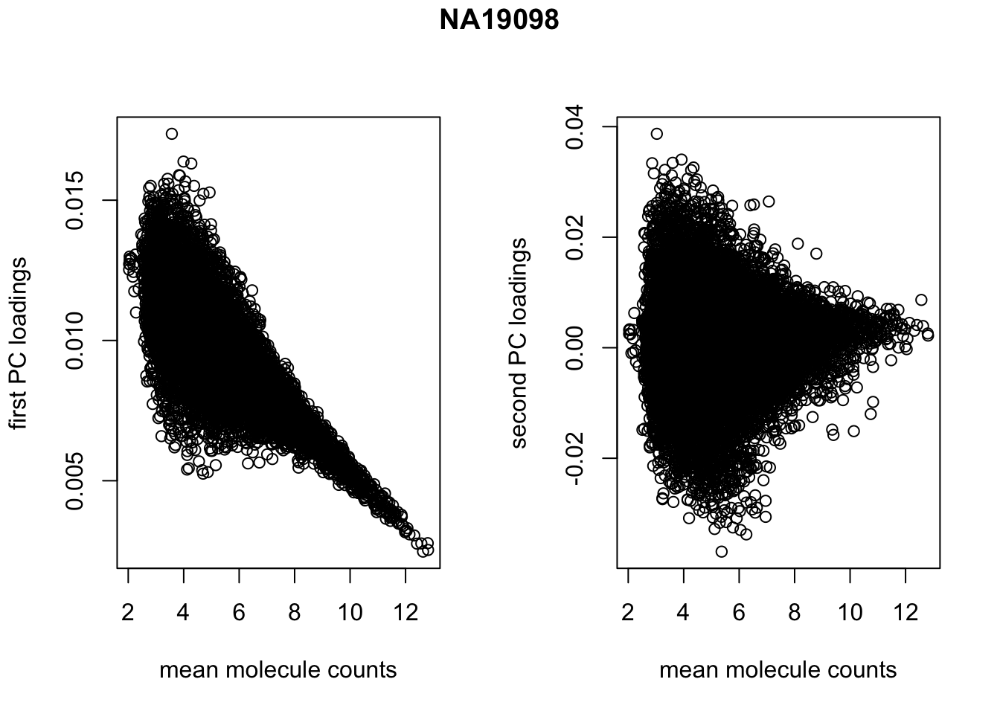
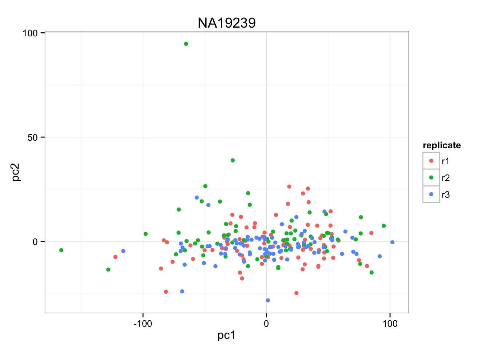
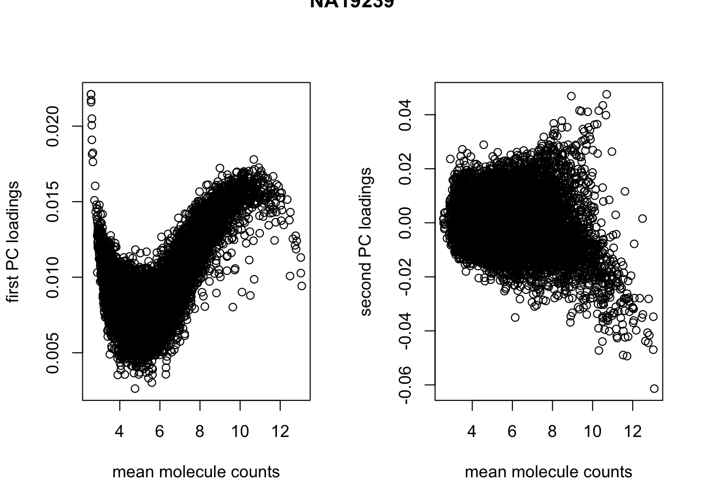

Compare transcriptome-wide profile of CVs
Joyce Hsiao
2015-10-25
Last updated: 2015-12-11
Code version: a795f9edad85aa99750bd8425fbe4d89346cfd42
Objective
Compare transcriptome profile of cell-to-cell heterogeneity within individuals betwen batches and between individuals.
Here we compute CV for each of the batches and then follow the algorithm described in Kolodziejczk et al. (2015) to remove mean dependency of the batch-specific CVs. Then, in order to compare CVs between individuals, we need to account for the multiple CVs for each gene for each individual cell line. The statistical test of choice would be a nonparametric equivalent of two-way ANOVA, which turns out to be difficult to compute.
Set up
library("data.table")
library("dplyr")
library("limma")
library("edgeR")
library("ggplot2")
library("grid")
theme_set(theme_bw(base_size = 12))
source("functions.R")Prepare data
Input annotation of only QC-filtered single cells. Remove NA19098.r2
anno_qc_filter <- read.table("../data/annotation-filter.txt", header = TRUE,
stringsAsFactors = FALSE)Import endogeneous gene molecule counts that are QC-filtered, CPM-normalized, ERCC-normalized, and also processed to remove unwanted variation from batch effet. ERCC genes are removed from this file.
molecules_ENSG <- read.table("../data/molecules-final.txt", header = TRUE, stringsAsFactors = FALSE)Input moleclule counts before log2 CPM transformation. This file is used to compute percent zero-count cells per sample.
molecules_sparse <- read.table("../data/molecules-filter.txt", header = TRUE, stringsAsFactors = FALSE)
molecules_sparse <- molecules_sparse[grep("ENSG", rownames(molecules_sparse)), ]
stopifnot( all.equal(rownames(molecules_ENSG), rownames(molecules_sparse)) )Compute normalized CV for each batch
source("../code/cv-functions.r")
# compute_cv() takes log2 counts as input
ENSG_cv <- compute_cv(log2counts = molecules_ENSG,
grouping_vector = anno_qc_filter$batch)
ENSG_cv_adj <- normalize_cv(group_cv = ENSG_cv,
log2counts = molecules_ENSG,
anno = anno_qc_filter)Compare transcriptome profile within individuals
Within each individual
The CV normalization method employed here scales each sample individual with respect to data-wide coefficients of variation. Therefore, we would expect that the transcriptome-wide profile relationship between samples (with or between individuals) to be consistent before versus after normalization.
- Before normalization
print(friedman.test( cbind(ENSG_cv[[1]]$cv, ENSG_cv[[2]]$cv) ) )
Friedman rank sum test
data: cbind(ENSG_cv[[1]]$cv, ENSG_cv[[2]]$cv)
Friedman chi-squared = 454, df = 1, p-value < 2.2e-16print(friedman.test( cbind(ENSG_cv[[3]]$cv, ENSG_cv[[4]]$cv, ENSG_cv[[5]]$cv) ) )
Friedman rank sum test
data: cbind(ENSG_cv[[3]]$cv, ENSG_cv[[4]]$cv, ENSG_cv[[5]]$cv)
Friedman chi-squared = 285.15, df = 2, p-value < 2.2e-16print(friedman.test( cbind(ENSG_cv[[6]]$cv, ENSG_cv[[7]]$cv, ENSG_cv[[8]]$cv) ) )
Friedman rank sum test
data: cbind(ENSG_cv[[6]]$cv, ENSG_cv[[7]]$cv, ENSG_cv[[8]]$cv)
Friedman chi-squared = 4623.9, df = 2, p-value < 2.2e-16- After normalization
print(friedman.test( cbind(ENSG_cv_adj[[1]]$log10cv2_adj, ENSG_cv_adj[[2]]$log10cv2_adj) ) )
Friedman rank sum test
data: cbind(ENSG_cv_adj[[1]]$log10cv2_adj, ENSG_cv_adj[[2]]$log10cv2_adj)
Friedman chi-squared = 454, df = 1, p-value < 2.2e-16print(friedman.test( cbind(ENSG_cv_adj[[3]]$log10cv2_adj,
ENSG_cv_adj[[4]]$log10cv2_adj,
ENSG_cv_adj[[5]]$log10cv2_adj) ) )
Friedman rank sum test
data: cbind(ENSG_cv_adj[[3]]$log10cv2_adj, ENSG_cv_adj[[4]]$log10cv2_adj, ENSG_cv_adj[[5]]$log10cv2_adj)
Friedman chi-squared = 285.15, df = 2, p-value < 2.2e-16print(ENSG_cv[[6]]$individual[6])NULLprint(friedman.test( cbind(ENSG_cv_adj[[6]]$log10cv2_adj,
ENSG_cv_adj[[7]]$log10cv2_adj, ENSG_cv_adj[[8]]$log10cv2_adj) ) )
Friedman rank sum test
data: cbind(ENSG_cv_adj[[6]]$log10cv2_adj, ENSG_cv_adj[[7]]$log10cv2_adj, ENSG_cv_adj[[8]]$log10cv2_adj)
Friedman chi-squared = 4623.9, df = 2, p-value < 2.2e-16*Plot CV before/after normalization
The normalization method we used is a non-linear transformation. The method aims to remove heterogeneity of variances across mean gene expression levels.
plot(x = rank(log10((ENSG_cv_adj[[6]]$cv)^2)),
y = rank(ENSG_cv_adj[[6]]$log10cv2_adj),
xlab = "Before normalization", ylab = "After normalization",
cex = .4, pch = 16, main = "Ranks of CV")
abline(0, 1, col = "red")
plot(x = (log10((ENSG_cv_adj[[6]]$cv)^2)),
y = (ENSG_cv_adj[[6]]$log10cv2_adj),
xlab = "Before normalization", ylab = "After normalization",
cex = .4, pch = 16, main = "log10 squared-CV")
abline(0, 1, col = "red")
Compare transcriptome profile between individual, adjusted CV
- PCA
Perform PCA for each individual. Consider replicates. Then compare PCA gene loadings between individuals.
Use prcomp to perform PCA: * outputx : loadings * outputrotation: loadings * outputcenter : variablemeans * outputscale: variable standard deviation
library(matrixStats)
pca_individuals <- lapply(1:3, function(ii_individual) {
if (ii_individual == 1) {
df_ind <- cbind(ENSG_cv_adj$NA19098.r1$log10cv2_adj,
ENSG_cv_adj$NA19098.r3$log10cv2_adj )
df_ind <- (df_ind - rowMeans(df_ind))/sqrt(rowVars(df_ind))
}
if (ii_individual == 2) {
df_ind <- cbind(ENSG_cv_adj$NA19101.r1$log10cv2_adj,
ENSG_cv_adj$NA19101.r2$log10cv2_adj,
ENSG_cv_adj$NA19101.r3$log10cv2_adj )
df_ind <- (df_ind - rowMeans(df_ind))/sqrt(rowVars(df_ind))
}
if (ii_individual == 3) {
df_ind <- cbind(ENSG_cv_adj$NA19239.r1$log10cv2_adj,
ENSG_cv_adj$NA19239.r2$log10cv2_adj,
ENSG_cv_adj$NA19239.r3$log10cv2_adj )
df_ind <- (df_ind - rowMeans(df_ind))/sqrt(rowVars(df_ind))
}
pca_results <- prcomp( t(df_ind), retx = TRUE, center = TRUE, scale = TRUE )
prop_var <- (pca_results$sdev^2) / sum(pca_results$sdev^2)
list(loadings = pca_results$x,
prop_var = prop_var)
})
sapply(pca_individuals, function(xx) round(xx$prop_var,2) )[[1]]
[1] 1 0
[[2]]
[1] 0.51 0.49 0.00
[[3]]
[1] 0.59 0.41 0.00pca_all <- cbind(pca_individuals[[1]]$loadings[ , 1],
pca_individuals[[2]]$loadings[ , 1],
pca_individuals[[3]]$loadings[ , 1] )
friedman_results <- friedman.test(pca_all)
friedman_results
Friedman rank sum test
data: pca_all
Friedman chi-squared = 0.66667, df = 2, p-value = 0.7165Between individual, unadjusted CV
- PCA for each individual
pca_individuals <- lapply(1:3, function(ii_individual) {
if (ii_individual == 1) {
df_ind <- log10(cbind(ENSG_cv_adj$NA19098.r1$cv,
ENSG_cv_adj$NA19098.r3$cv )^2 )
}
if (ii_individual == 2) {
df_ind <- log10(cbind(ENSG_cv_adj$NA19101.r1$cv,
ENSG_cv_adj$NA19101.r2$cv,
ENSG_cv_adj$NA19101.r3$cv )^2)
}
if (ii_individual == 3) {
df_ind <- log10(cbind(ENSG_cv_adj$NA19239.r1$cv,
ENSG_cv_adj$NA19239.r2$cv,
ENSG_cv_adj$NA19239.r3$cv )^2 )
}
pca_results <- prcomp( df_ind, retx = TRUE, center = TRUE, scale = TRUE)
prop_var <- (pca_results$sdev^2) / sum(pca_results$sdev^2)
list(scores = pca_results,
loadings = pca_results$x,
prop_var = prop_var)
})
sapply(pca_individuals, function(xx) xx$prop_var)[[1]]
[1] 0.95561426 0.04438574
[[2]]
[1] 0.94399168 0.02924917 0.02675915
[[3]]
[1] 0.94613908 0.02872685 0.02513406pca_all <- cbind(pca_individuals[[1]]$loadings[ , 1],
pca_individuals[[2]]$loadings[ , 1],
pca_individuals[[3]]$loadings[ , 1] )
friedman_results <- friedman.test(pca_all)
friedman_results
Friedman rank sum test
data: pca_all
Friedman chi-squared = 8.6708, df = 2, p-value = 0.0131- Compute CV across replicates
First we make PCA of each individual samples to evaluate whether replicate is a main source of variation. If replicate is not a main source of variation, we will combine the replicates to perform between indvidual comparisons.
temp <- molecules_ENSG[, anno_qc_filter$individual == "NA19098"]
anno_temp <- anno_qc_filter[anno_qc_filter$individual == "NA19098",]
pca_temp <- prcomp( t(temp - rowMeans(temp)) )
(pca_temp$sdev^2)[1:3]/sum(pca_temp$sdev^2)[1] 0.16112091 0.01273397 0.01082798xy <- cbind(pca_temp$x[,1], pca_temp$x[,2] )
ggplot(data.frame(pc1 = pca_temp$x[,1],
pc2 = pca_temp$x[,2],
replicate = anno_temp$replicate),
aes(x = pc1, y = pc2, col = replicate)) +
geom_point() +
ggtitle("NA19098")
par(mfrow = c(1,2))
plot(x = rowMeans(temp), y = pca_temp$rotation[ ,1],
xlab = "mean molecule counts", ylab = "first PC loadings")
plot(x = rowMeans(temp), y = pca_temp$rotation[ ,2],
xlab = "mean molecule counts", ylab = "second PC loadings")
title(main = "NA19098", outer = TRUE, line = -1)
cor(rowMeans(temp), pca_temp$rotation[ ,1], method = "spearman")[1] -0.6703884temp <- molecules_ENSG[, anno_qc_filter$individual == "NA19101"]
anno_temp <- anno_qc_filter[anno_qc_filter$individual == "NA19101",]
pca_temp <- prcomp( t(temp - rowMeans(temp)))
(pca_temp$sdev^2)[1:3]/sum(pca_temp$sdev^2)[1] 0.123570628 0.012287068 0.008106379xy <- cbind(pca_temp$x[,1], pca_temp$x[,2] )
ggplot(data.frame(pc1 = pca_temp$x[,1],
pc2 = pca_temp$x[,2],
replicate = anno_temp$replicate),
aes(x = pc1, y = pc2, col = replicate)) +
geom_point() +
ggtitle("NA19101")
par(mfrow = c(1,2))
plot(x = rowMeans(temp), y = pca_temp$rotation[ ,1],
xlab = "mean molecule counts", ylab = "first PC loadings")
plot(x = rowMeans(temp), y = pca_temp$rotation[ ,2],
xlab = "mean molecule counts", ylab = "second PC loadings")
title(main = "NA19101", outer = TRUE)
cor(rowMeans(temp), pca_temp$rotation[ ,1], method = "spearman")[1] -0.6761292temp <- molecules_ENSG[, anno_qc_filter$individual == "NA19239"]
anno_temp <- anno_qc_filter[anno_qc_filter$individual == "NA19239",]
pca_temp <- prcomp( t(temp - rowMeans(temp)), retx = TRUE, center = TRUE, scale = TRUE )
(pca_temp$sdev^2)[1:3]/sum(pca_temp$sdev^2)[1] 0.190501391 0.011386141 0.007254053xy <- cbind(pca_temp$x[,1], pca_temp$x[,2] )
ggplot(data.frame(pc1 = pca_temp$x[,1],
pc2 = pca_temp$x[,2],
replicate = anno_temp$replicate),
aes(x = pc1, y = pc2, col = replicate)) +
geom_point() +
ggtitle("NA19239")
par(mfrow = c(1,2))
plot(x = rowMeans(temp), y = pca_temp$rotation[ ,1],
xlab = "mean molecule counts", ylab = "first PC loadings")
plot(x = rowMeans(temp), y = pca_temp$rotation[ ,2],
xlab = "mean molecule counts", ylab = "second PC loadings")
title(main = "NA19239", outer = TRUE)
Compute CV across replicates.
cv_individual <- lapply(1:3, function(ii_individual) {
individuals <- unique(anno_qc_filter$individual)
counts <- molecules_ENSG[ , anno_qc_filter$individual == individuals [ii_individual]]
means <- apply(counts, 1, mean)
sds <- apply(counts, 1, sd)
cv <- sds/means
return(cv)
})
names(cv_individual) <- unique(anno_qc_filter$individual)
cv_individual <- do.call(cbind, cv_individual)
friedman.test(cv_individual)
Friedman rank sum test
data: cv_individual
Friedman chi-squared = 3524.3, df = 2, p-value < 2.2e-16Session information
sessionInfo()R version 3.2.1 (2015-06-18)
Platform: x86_64-apple-darwin13.4.0 (64-bit)
Running under: OS X 10.10.5 (Yosemite)
locale:
[1] en_US.UTF-8/en_US.UTF-8/en_US.UTF-8/C/en_US.UTF-8/en_US.UTF-8
attached base packages:
[1] grid stats graphics grDevices utils datasets methods
[8] base
other attached packages:
[1] matrixStats_0.15.0 zoo_1.7-12 ggplot2_1.0.1
[4] edgeR_3.10.5 limma_3.24.15 dplyr_0.4.3
[7] data.table_1.9.6 knitr_1.11
loaded via a namespace (and not attached):
[1] Rcpp_0.12.2 magrittr_1.5 MASS_7.3-45 munsell_0.4.2
[5] lattice_0.20-33 colorspace_1.2-6 R6_2.1.1 stringr_1.0.0
[9] plyr_1.8.3 tools_3.2.1 parallel_3.2.1 gtable_0.1.2
[13] DBI_0.3.1 htmltools_0.2.6 yaml_2.1.13 assertthat_0.1
[17] digest_0.6.8 reshape2_1.4.1 formatR_1.2.1 evaluate_0.8
[21] rmarkdown_0.8.1 labeling_0.3 stringi_1.0-1 scales_0.3.0
[25] chron_2.3-47 proto_0.3-10